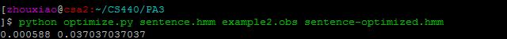

-
Pattern Recognition: Report the observation probability of each input sequence
Retrieve information from the input files (sentence.hmm, example[x].obs) (note that [x] in example[x] is a number
Computes the probabilities for each observations from 'example[x].obs' by forward algorithm and print these probabilities
-
State-Path Determination: Determine the optimal state path for each observation set and report its probability. Viterbi algorithm is used in this part.
Retrieve information from the input files (sentence.hmm, example[x].obs) (note that [x] in example[x] is a number
function viterbi():
This function uses Viterbi algorithm to find the optimal path and its probability.
-
Model Optimization: Optimize the HMM and report the probabilities before and after optimization with the help of Baum-Welch algorithm
function sentence_info():
Read info from designated input file ('sentence.hmm')
function example_info():
Read info from designated input file ('example[x].obs')
function forward():
helper function that performs the specialized forward operations
function backward():
helper function that performs the backward operations
function update_Pi():
helper function that computes Pi (Initial State Distribution)
function lamda():
helper function that calculates lambda
function gamma():
helper function that calculates gamma
function update_A():
helper function that update A (Transition Matrix)
function update_B():
helper function that updates B (Emission Matrix)
function re_estimation():
Performs the re-estimation process
function prob():
helper function that calculates the probability for a specific observations
function write_to():
Write outputs to a designated file
Question: For the current application, why does this probability seem lower than we expect? What does this probability tell you? Does the current HMM always give a reasonable answer? For instance, what is the output probability for the below sentence?
"robots do kids play chess"
"chess eat play kids"
Answer: Because the transition and emission matrices are not accurate enough. This probability tells us although the HMM can recognize basic grammar patterns, it still can't distinguish between logic orders. The current model doesn't always give a reasonable answer. The outputs are 0.001512 and 0.0
Question: What can we tell from the reported optimal path for syntax analysis purpose? Can the HMM always correctly distinguish "statement" from "question" sentence? Why?
Answer: We can observe the arrangement of the syntax which allows us to analyize and distinguish different states( grammar checking) Since the HMM can correctly performing grammar checking, as long as it discovers that the first state of the observation is auxilliry, then it knows that it's a question sentence, otherwise it's a normal statement.
Question: Why should you not try to optimize an HMM with zero observation probability?
Answer: If we try to optimize an HMM with zero observation probability, since certains states are never reached during the training, then at some time t, forward_t(i) and backward_t(i) for i in range(N) will be equal to 0 at that point, and hence the P(O|lambda) will be 0. Apparently we can't apply a 0 as the denominator to the gamma and xi function, which leads to an output of 0 for that state in transition and emission matrix, that's why P(O|lambda) = 0 HMM can't be optimized.
Question: What kinds of changes will you need to make in the above HMM? Please describe your solution with an example of the modified matrices a, b and pi in the submitted web page.
Answer: we need to add states and observations. for each n states we want to add the the HMM, we need to expand a's rows and colomns both by n, length of pi by n, and b's rows by n. for o observations we add to the HMM, we need to expand b's colomns by o.
As an example , consider this new sentence.hmm, which is an example where we add "Adverb" to states and "good" and "hardly" to observations. Note that "good" can also be "Subject" or "object" (b[0][8] and b[3][8])
Problem Definition
In this assignment, we build a basic English sentence recognizer based on hidden Markov models ("HMMs"), which is expected to recognize and parse sentences that use the certain vocabulary.
Method and Implementation
Experiments
Experiment number: 6
Variables/inputs:
#1: sentence.hmm (filename, used for HMM training)
#2: example[x].obs (filename, used for computation of probability or updates)
#3: [filename].hmm (filename, used for storing the updated variables of HMM)
The results of experiments match with the provided sample outputs given in the homework requirements
In all experiments, where the variables were correctly entered, this program runs without break
Discuss your method and results:
HMMs might be helpful when trying to diagonize the english or some other languages in some cases, on the other hand, trainning with multiple observation sequences is critical if we want to have satisfying results
This assignment challenges our understanding of algorithms realted to HMM and python coding skills. After finished this assignment, we have learn a lot and will try some more methods in the future.
References: Notes from Professor Betke's class
A Tutorial on Hidden Markov Models and Selected Applications in Speech Recognition by Rabiner [1989]
Discussed with teammates
Contributions:
Yehui Huang: State-Path determination (statepath.py) & Optimization (optimize.py)
Tianqi Xu : Report & Optimization (optimize.py)
Wei wei : Forward part (recognize.py) & Optimization (optimize.py)
Xiao Zhou : Report & Optimization (optimize.py)
Results
Results Table
Test runs
Inputs & Results/Outputs
Written file
Test 1 for recognize.py
N/A
Test 2 for recognize.py

N/A
Test 1 for statepath.py
N/A
Test 2 for statepath.py
N/A
Test 1 for optimize.py
Test 2 for optimize.py

Test 3 for optimize.py
Discussion
Conclusions
Credits and Bibliography